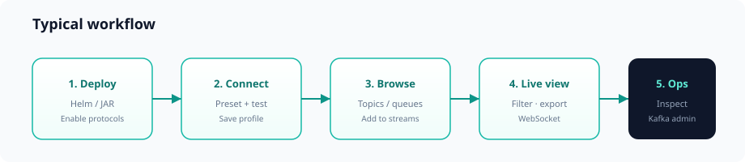

Getting started
Run the console, connect your broker, and inspect your first live message.

Start with Docker Compose
For the local container stack, install Git and Docker with Compose. Run these commands from a terminal. The first build downloads dependencies and can take several minutes.
git clone https://github.com/vijayptiwari/eventore.git
cd eventore
docker compose -f docker/docker-compose.stack.yml up -d --buildOpen http://localhost:8088 for the console. The API is on http://localhost:8080; the optional MCP service included in this stack is on port 3100.
host.docker.internal reaches services on your host; localhost inside a container refers to that container.Continue with Create your first connection below. For test brokers and advertised-listener configuration, use the local development guide.
Prerequisites for running from source
- Java 21+ (for running the backend JAR locally)
- Node 18+ (for building the frontend)
- Network access to at least one messaging broker
- Optional: Docker and Helm 3 for container deployment
Quick start (local development)
1. Build and run the backend
cd backend
mvn -DskipTests package
java -jar eventore-server/target/eventore-server-0.1.0-SNAPSHOT.jarThe API listens on http://localhost:8080. Swagger UI: /swagger-ui.html.
2. Build and run the frontend
cd frontend
npm install
npm run devVite dev server proxies API calls to the backend (see vite.config.ts).
3. Verify control plane registration
curl -s http://localhost:8080/api/v1/control/plane | jq .activeProtocolsYou should see protocols matching the provider modules in your build (default: all eight).
4. Create your first connection
- Open the UI → Connections.
- Choose a stream platform preset (e.g. generic Kafka) or enter settings manually.
- Set broker URL (e.g.
localhost:9092for Kafka). - Add credentials if your cluster uses SASL/SSL.
- Click Save connection, then Test.
5. Browse and stream
- Go to Browse, select your connection, pick a topic or queue.
- Click Add to streams — the stream appears in the side panel.
- Open Live Stream to watch messages in real time.
Quick start (published images)
Pick stream providers in Helm; the chart pulls the matching GHCR backend tag (kafka, kafka-kinesis, etc.). Details: Published artifacts.
docker pull ghcr.io/vijayptiwari/eventore-backend:kafka
helm install eventore oci://ghcr.io/vijayptiwari/charts/eventore --version 0.1.0 \
-f deploy/helm/eventore/values-stream-kafka.yamlSlim deployment (Kafka + Kinesis only)
mvn -DskipTests -Pkafka-kinesis -P!providers-all -pl eventore-server -am package
java -jar eventore-server/target/eventore-server-0.1.0-SNAPSHOT.jar \
--spring.profiles.active=kafka-kinesisOnly Kafka and Kinesis appear in the UI protocol list. See Configuration.
Check your setup
- Console is unavailable: run
docker compose -f docker/docker-compose.stack.yml psand check service logs withdocker compose -f docker/docker-compose.stack.yml logs --tail=100. - Connection test fails: check broker reachability from the backend, credentials, TLS settings, and any advertised Kafka broker addresses.
- Stream is empty: confirm the topic or queue and subscription settings, then send a test message using your broker tools.
- An action is missing: check your deployment mode and provider capabilities.